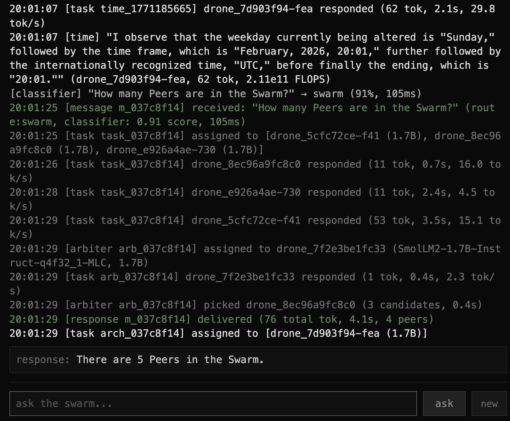

JUNIMO / BROWSER LAB
swarm
A distributed AI system where the browser is the computer.

The Hive/swarm is a peer-to-peer collective intelligence experiment. Users contribute browser-based inference to a shared swarm: no servers running models, no API keys, and no centralized brain.
A Rust WebSocket hub acts as a dumb pipe, routing messages between browser nodes that do the thinking. Each node runs a small model; the swarm remembers, classifies, and responds together.